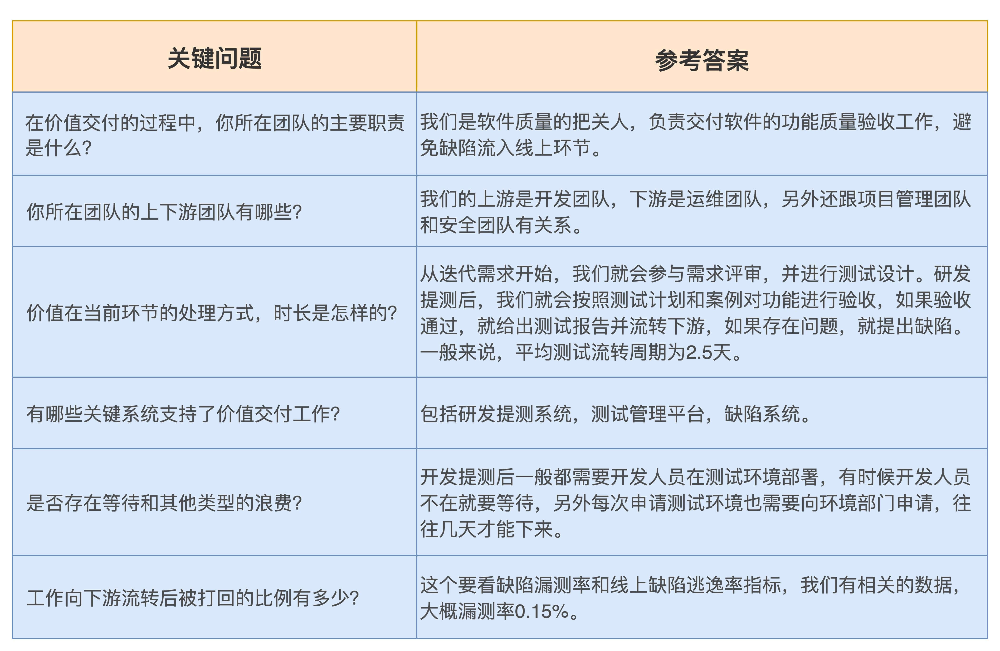
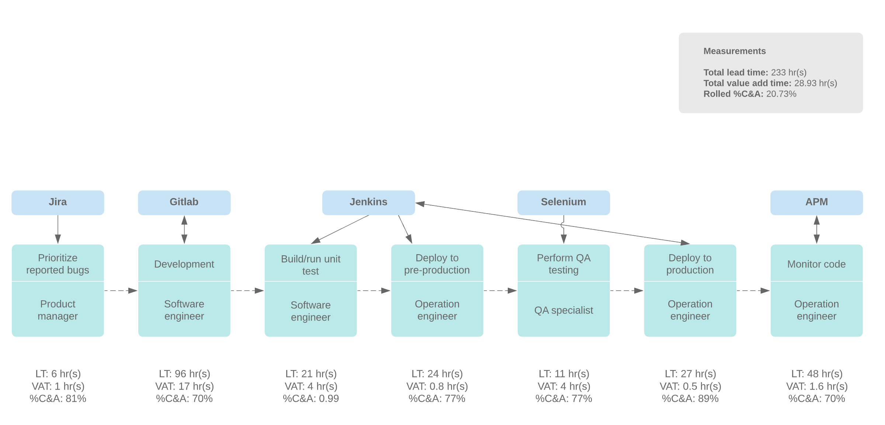
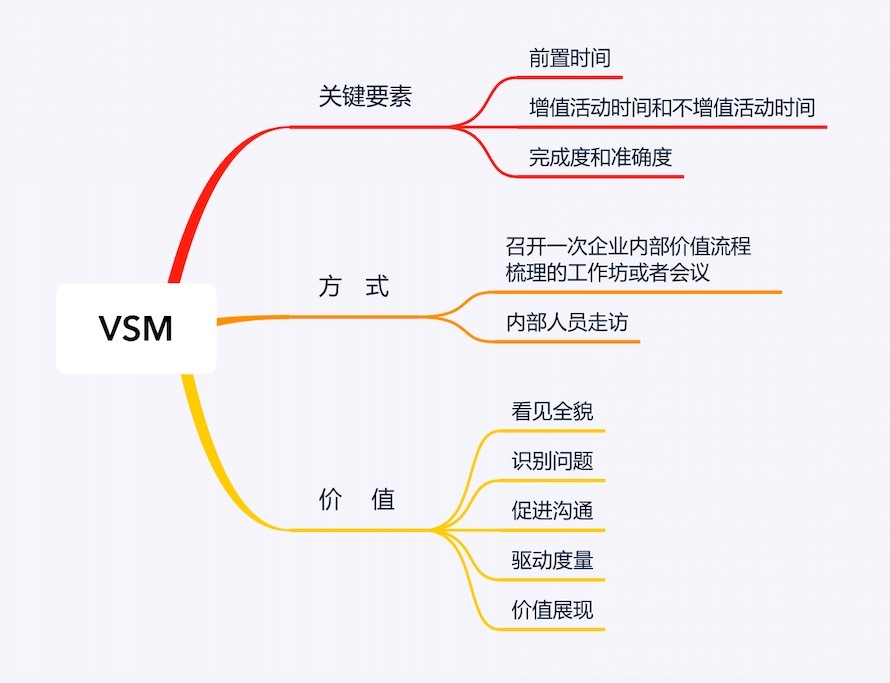

- 00 开篇词 从默默无闻到风靡全球，DevOps究竟有什么魔力？.md.html
- 01 DevOps的“定义”：DevOps究竟要解决什么问题？.md.html
- 02 DevOps的价值：数字化转型时代，DevOps是必选项？.md.html
- 03 DevOps的实施：到底是工具先行还是文化先行？.md.html
- 04 DevOps的衡量：你是否找到了DevOps的实施路线图？.md.html
- 05 价值流分析：关于DevOps转型，我们应该从何处入手？.md.html
- 06 转型之路：企业实施DevOps的常见路径和问题.md.html
- 07 业务敏捷：帮助DevOps快速落地的源动力.md.html
- 08 精益看板（上）：精益驱动的敏捷开发方法.md.html
- 09 精益看板（下）：精益驱动的敏捷开发方法.md.html
- 10 配置管理：最容易被忽视的DevOps工程实践基础.md.html
- 11 分支策略：让研发高效协作的关键要素.md.html
- 12 持续集成：你说的CI和我说的CI是一回事吗？.md.html
- 13 自动化测试：DevOps的阿克琉斯之踵.md.html
- 14 内建质量：丰田和亚马逊给我们的启示.md.html
- 15 技术债务：那些不可忽视的潜在问题.md.html
- 16 环境管理：一切皆代码是一种什么样的体验？.md.html
- 17 部署管理：低风险的部署发布策略.md.html
- 18 混沌工程：软件领域的反脆弱.md.html
- 19 正向度量：如何建立完整的DevOps度量体系？.md.html
- 20 持续改进：PDCA体系和持续改进的意义.md.html
- 21 开源还是自研：企业DevOps平台建设的三个阶段.md.html
- 22 产品设计之道：DevOps产品设计的五个层次.md.html
- 23 持续交付平台：现代流水线必备的十大特征（上）.md.html
- 24 持续交付平台：现代流水线必备的十大特征（下）.md.html
- 25 让数据说话：如何建设企业级数据度量平台？.md.html
- 26 平台产品研发：三个月完成千人规模的产品要怎么做？.md.html
- 27 巨人的肩膀：那些你不能忽视的开源工具.md.html
- 28 迈向云端：云原生应用时代的平台思考.md.html
- 29 向前一步：万人规模企业的DevOps实战转型案例（上）.md.html
- 30 向前一步：万人规模企业的DevOps实战转型案例（下）.md.html
- 期中总结 3个典型问题答疑及如何高效学习 (1).md.html
- 期中总结 3个典型问题答疑及如何高效学习.md.html
- 期末总结 在云时代，如何选择一款合适的流水线工具？.md.html
- 特别放送（一）成为DevOps工程师的必备技能（上）.md.html
- 特别放送（三）学习DevOps不得不了解的经典资料.md.html
- 特别放送（二）成为DevOps工程师的必备技能（下）.md.html
- 特别放送（五）关于DevOps组织和文化的那些趣事儿.md.html
- 特别放送（四）Jenkins产品经理是如何设计产品的？.md.html
- 结束语 持续改进，成就非凡！.md.html
- 捐赠
05 价值流分析：关于DevOps转型，我们应该从何处入手？
你好，我是石雪峰。
关于“DevOps如何落地”的问题，向来是关注度很高的，所以，从今天开始，我会用16讲的篇幅跟你聊聊这个话题的方方面面。作为“落地实践篇”的第1讲，我先跟你聊聊DevOps转型的那些事儿。
相信你一定听说过持续交付吧？现在，几乎每家实施DevOps的企业都宣称他们已经有了一套持续交付平台，或者是正在建设持续交付平台。但是，如果你认为只需要做好持续交付平台就够了，那就有点OUT了。因为现在国外很多搞持续交付产品的公司，都在一门心思地做另外一件事情，这就是VSM价值流交付平台。
比如，Jenkins的主要维护者CloudBees公司最新推出的DevOptics产品，主打VSM功能，而经典的持续交付产品GoCD的VSM视图也一直为人所称道。那么，这个VSM究竟是个啥玩意儿呢？
要说清楚VSM，首先就要说清楚什么是价值。简单来说，价值就是那些带给企业生存发展的核心资源，比如生产力、盈利能力、市场份额、用户满意度等。
VSM是Value Stream Mapping的缩写，也就是我们常说的价值流图。它起源于传统制造业的精益思想，用于分析和管理一个产品交付给用户所经历的业务流、信息流，以及各个阶段的移交过程。
说白了，VSM就是要说清楚在需求提出后，怎么一步步地加工原材料，进行层层的质量检查，最终将产品交付给用户的过程。通过观察完整流程中各个环节的流动效率和交付质量，识别不合理的、低效率的环节，进行优化，从而实现整体效率的提升。
这就好比我们在餐厅点了一道菜，这个需求提出后，要经历点单、原材料初加工（洗菜）、原材料细加工（切菜）、制作（炒菜），最终被服务员端到餐桌上的完整过程。但有时候，厨师已经把菜做好摆在窗口的小桌上了，结果负责上菜的服务员正在忙，等他（她）忙完了，才把菜端到我们的餐桌上，结果热腾腾的锅气就这么流失了。
对软件开发来说，也是如此。由于部门职责的划分，每个人关注的都是自己眼前的事情，这使得软件交付过程变得碎片化，以至于没有一个人能说清楚整个软件交付过程的方方面面。
所以，通过使用价值流图对软件交付过程进行建模，使整个过程可视化，从而识别出交付的瓶颈和各个环节之间的依赖关系，这恰恰是“DevOps三步工作法”的第一步“流动”所要解决的问题。
我简单介绍下“DevOps三步工作法”。它来源于《DevOps实践指南》，可以是说整本书的核心主线。高度抽象的“三步工作法”，概括了DevOps的通用实施路径。
- 第一步：流动。通过工作可视化，限制在制品数量，并注入一系列的工程实践，从而加速从开发到运营的流动过程，实现低风险的发布。
- 第二步：反馈。通过注入流动各个过程的反馈能力，使缺陷在第一时间被发现，用户和运营数据第一时间展示，从而提升组织的响应能力。
- 第三步：持续学习和试验。没有任何文化和流程是天生完美的，通过团队激励学习分享，将持续改进注入日常工作，使组织不断进步。
关键要素
你并不需要花大力气去研究生产制造业中的价值流分析到底是怎么玩的，你只要了解有关VSM的几个关键要素和核心思想就行了。那么，VSM中有哪些关键要素和概念呢？有3点是你必须要了解的。
- 前置时间（Lead Time，简称LT）。前置时间在DevOps中是一项非常重要的指标。具体来说，它是指一个需求从提出（典型的就是创建一个需求任务）的时间点开始，一直到最终上线交付给用户为止的时间周期。这部分时间直接体现了软件开发团队的交付速率，并且可以用来计算交付吞吐量。DevOps的核心使命之一就是优化这段时长。
- 增值活动时间和不增值活动时间（Value Added Time/Non-Value Added Time，简称VAT/NVAT）。在精益思想中，最重要的就是消除浪费，也就是说最大化流程中那些增值活动的时长，降低不增值活动的时长。在软件开发行业中，典型的不增值活动有很多，比如无意义的会议、需求的反复变更、开发的缺陷流向下游带来的返工等。
- 完成度和准确度（% Complete/Accurate，简称%C/A）。这个指标用来表明工作的质量，也就是有多少工作因为质量不符合要求而被下游打回。这里面蕴含了大量的沟通和返工成本，从精益的视角来看，也是一种浪费。
在实践中，企业往往将需求作为抓手，来串联打通各个环节，而前置时间是需求管理的自然产物，采集的难度不在于系统本身，而在于各环节的操作是否及时有效。有的团队也在使用需求管理工具，但是前置时长大多只有几秒钟。问题就在于，他们都是习惯了上线以后，一下子把任务状态直接从开始拖到最后，这样就失去了统计的意义。
需要注意的是，关于前置时间，有很多种解释，一般建议采用需求前置时间和开发前置时间两个指标进行衡量，关于这两个指标的定义，你可以简单了解一下。
需求前置时间：从需求提出（创建任务），到完成开发、测试、上线，最终验收通过的时间周期，考查的是团队整体的交付能力，也是用户核心感知的周期。
开发前置时间：从需求开始开发（进入开发中状态），到完成开发、测试、上线，最终验收通过的时间周期，考查的是团队的开发能力和工程能力。
对于增值活动时长，我的建议是初期不用过分精细，可以优先把等待时长统计出来，比如一个需求从准备就绪，到进入开发阶段，这段时间就是等待期。同前置时间一样，很多时候，研发的操作习惯也会影响数据的准确性，比如有的研发喜欢一次性把所有的需求都放到开发阶段，然后再一个个处理掉，这就导致很多实际的等待时间难以识别。所以，如果完全依靠人的操作来确保流程的准确性，就会存在很大的变数。通过流程和平台的结合，来驱动流程的自动化流转，这才是DevOps的正确姿势。
举个例子，研发开发完成发起提测后，本次关联的需求状态可以自动从“开发中”变成“待测试”状态，而不是让人手动去修改状态，这样就可以避免人为因素的影响。通过代码，流水线和需求平台绑定，从而实现状态的自动流转。
关于完成度和准确度，在使用VSM的初期可以暂不处理。实际上，我见过一些公司在跑通主流程之后，着手建设质量门禁相关的指标，比如研发自测通过率，这些指标就客观地反映了VSM的完成度和准确度。关于质量门禁，在专栏后面我会花一讲的时间来介绍，你一定不要错过。
方式
关于VSM的关键要素，知道这些就足够了。那么作为企业DevOps转型工作的第一步，我们要如何开展一次成功的VSM活动呢？一般来说，有2种方式。
1.召开一次企业内部价值流程梳理的工作坊或者会议。
这是我比较推荐的一种方式。对于大型企业而言，可以选取改进项目对象中某个核心的业务模块，参加会议的人员需要覆盖软件交付的所有环节，包括工具平台提供方。而且，参会人员要尽量是相对资深的，因为他们对自身所负责的业务和上下游都有比较深刻的理解，比较容易识别出问题背后的根本原因。
不过，这种方式的实施成本比较高。毕竟，这么多关键角色能够在同一时间坐在一起本身就比较困难。另外，面对面沟通的时候，为了给对方保留面子，大家多少都会有所保留，这样就会隐藏很多真实的问题。
所以，一般情况下，像团队内部的敏捷回顾会，或者是版本发布总结会，都是很合适的机会，只需要邀请部分平常不参会的成员就行了。
2.内部人员走访。
如果第1种方式难以开展，你可以退而求其次地采用第2种方式。通常来说，企业内部的DevOps转型工作都会有牵头人，甚至会成立转型小组，那么可以由这个小组中的成员对软件交付的各个环节的团队进行走访。这种方式在时间上是比较灵活的，但对走访人的要求比较高，最好是DevOps领域的专家，同时是企业内部的老员工，这样可以跟受访人有比较深入坦诚的交流。
无论哪种方式，你都需要识别出几个关键问题，缩小谈话范围，避免漫无目的地东拉西扯，尽量做到有效沟通。比如，可以建立一个问题列表：
- 在价值交付过程中，你所在团队的主要职责是什么？
- 你所在团队的上下游团队有哪些？
- 价值在当前环节的处理方式，时长是怎样的？
- 有哪些关键系统支持了价值交付工作？
- 是否存在等待或其他类型的浪费？
- 工作向下游流转后被打回的比例是多少？
为了方便你更好地理解这些问题，我给你提供一份测试团队的访谈示例。

通过访谈交流，我们就可以对整个软件交付过程有一个全面的认识，并根据交付中的环节、上下游关系、处理时长、识别出来的等待浪费时长等，按照VSM模型图画出当前部门的价值流交付图，以及各个阶段的典型工具，如下图所示：

当然，实际交付流程相当复杂，涉及到多种角色之间的频繁互动，是对DevOps转型团队的一种考验。因为这不仅需要团队对软件开发流程有深刻的认识，还要充分了解DevOps的理念和精髓，在沟通方面还得是一把好手，能够快速地跟陌生人建立起信任关系。
价值
话说回来，为什么VSM会是企业DevOps转型的第一步呢？实际上，它的价值绝不仅限于输出了一幅价值流交付图而已。VSM具有非常丰富的价值，包括以下几个方面：
1.看见全貌。
如果只关注单点问题，我们会很容易陷入局部优化的怪圈。DevOps追求的是价值流动效率最大化，也就是说，就算单点能力再强，单点之间的割裂和浪费对于价值交付效率的影响也是超乎想象的。所以，对于流程改进来说，第一步，也是最重要的一步，就是能够看见全貌，这样才能从全局视角找到可优化的瓶颈点，从而提升整体的交付效率。
另外，对于全局交付的建模，最终也会体现到软件持续交付流水线的建设上，因为流水线反映的就是企业客观的交付流程。这也就很好理解，为啥很多做持续交付流水线的公司，现在都延伸到了价值流交付平台上。因为这两者之间本身就存在一些共性，只不过抽象的级别和展现方式不同罢了。
2.识别问题。
在谈到企业交付效率的时候，我们很容易泛泛而谈，各种感觉满天飞，但感觉既不可度量，也不靠谱，毕竟，它更多地是依赖于个人认知。换句话说，即便交付效率提升了，也不知道是为啥提升的。
而VSM中的几个关键指标，也就是前置时长、增值和不增值时长，以及完成度和准确度，都是可以客观量化改进的指标。当面对这样一幅价值流图的时候，我们很容易就能识别出当前最重要的问题和改进事项。
3.促进沟通。
DevOps倡导通过团队成员间的沟通和协作来提升交付效率，但客观现实是，在很多企业中，团队成员基本都是“网友关系”。即便都在一个楼里办公，也会因为部门不同坐在不同的地方，基本上只靠即时通讯软件和邮件交流。偶尔开会的时候能见上一面，但也很少有深入的交流。如果团队之间处于你不认识我、我也不认识你的状况下，又怎么有效协作呢？
另外，很多时候，在我们开展VSM梳理的时候，团队才第一次真正了解上下游团队的职责、工作方式，以及让他们痛苦低效的事情。这时，我们通常会设身处地地想：“只要我们多做一点点，就能大大改善兄弟团队的生存状况了。”实际上，这种同理心对打破协作的壁垒很有帮助，可以为改善团队内部文化带来非常正面的影响。实际上，这也是我推荐你用会议或者工作坊的方式推进VSM的根本原因。
4.驱动度量。
我们都认可数据的力量，让数据驱动改进。但是，面对这么庞杂的数据体系，到底哪些才是真正有价值的呢？VSM就可以回答这个问题。
在VSM访谈的时候，我们要问一个团队的交付周期、准确率等指标问题，如果你发现这个团队支支吾吾，只能给出模糊的回答，这时你就要注意啦，这里本身就大有问题。因为这就表示当前环节的度量指标不够清晰，或者指标过于复杂，团队不清楚关键的结果指标。
另外，如果数据的提取需要大量时间，比如需要采用人为统计算数的方式，那么这就体现了这个环节的平台建设能力不足，无法自动化地收集和统计数据，甚至有些关键数据还没有沉淀到数据系统中，只能通过人工本地化的方式进行管理。
这些都是DevOps转型的过程中需要解决的问题，可以优先处理。可以说，VSM是一场团队协作的试炼。收集VSM数据的过程本身，就需要平台间的打通和数据共享，以及自动化的推进，这有助于度量活动的开展。
5. 价值展现。
对于企业而言，任何投入都需要有产出。要实现DevOps的转型，企业需要投入大量的精力。那么如何让高层领导明白企业交付效率改善所带来的价值呢？价值流梳理就是一种很好的方式。因为VSM从价值分析而来，到价值优化而去，本身就是在回答DevOps对于企业的价值问题。
总结
在这一讲中，我给你介绍了DevOps转型的第一步——VSM价值流图，包括它的来源、3个关键要素，以及在企业中开展VSM的2种方式。最后，我介绍了VSM的5大价值，分别是看见全貌、识别问题、促进沟通、驱动度量和价值展现。
就像我们常说的，DevOps转型是一场没有终点的旅程，VSM的梳理也不会是一帆风顺的。因为对于企业价值交付流程的梳理，需要随着认知的深入不断地进行迭代和优化。不过，好的开始是成功的一半，当我们开始梳理VSM的时候，我们的着眼点就会慢慢调整到DevOps模式，并真正地开启我们的DevOps转型之旅。

思考题
最后，给你留一道思考题：你认为在公司内部梳理价值流的最大障碍是什么？在提取价值流图中的3个关键要素的数据时，你遇到过什么挑战吗？
欢迎在留言区写下你的思考和答案，我们一起讨论，共同学习进步。如果你觉得这篇文章对你有所帮助，欢迎你把文章分享给你的朋友。
© 2019 - 2023 Liangliang Lee. Powered by gin and hexo-theme-book.